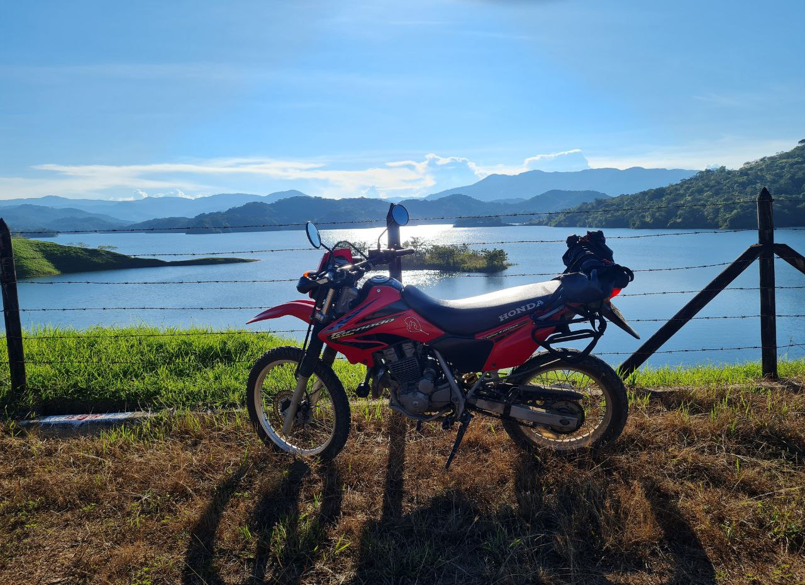
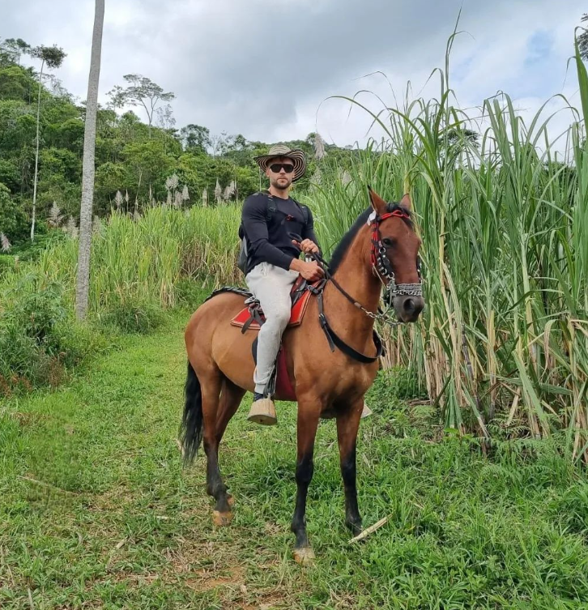
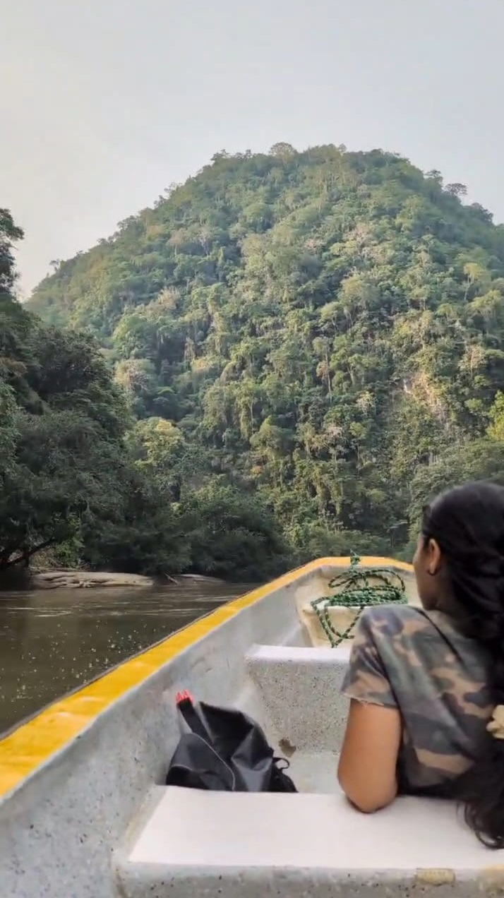

Welcome to our exciting and immersive adventure experience in the picturesque town of San Rafael, nestled in the heart of Colombia's stunning landscapes. We are dedicated to providing you with an unforgettable journey that combines off-road exploration, natural beauty, and authentic local experiences.
Discover the magic of destinations like San Carlos and San Rafael on an exciting one-day tour.
View DetailsDesign your own itinerary! Let us know your preferences, and we'll take you wherever you want to go.
View DetailsRelax and enjoy as we pick you up from your hotel and take you back after two amazing days.
View DetailsFeel the excitement on two wheels as you explore our destinations on a thrilling motorcycle tour.
View DetailsDo you want to dive deeper into the jungle? Sometimes the mechanical divisions of HydroXpeditions isn't fit for the hardest terrain... But don't worry we are now also offering a horseback riding Xpedition to one of the wildest region of San Rafael
View DetailsBoat Ride in the Jungle: Feel the thrill as you journey through the tranquil waters, surrounded by towering trees and vibrant flora. This unique boat ride offers a rare glimpse into Colombia's untouched wilderness.
View DetailsThe All-Inclusive package, for the ones who don't want to worry about anything. On the first day I will come and pick you up at your hotel in Medellin at 8 :00 AM and bring you to the finca in San Carlos via the most scenic routes (offroad guaranteed). On the next day you will be able to pick one of the several tour destinations that San Rafael, San Carlos and other municipalities have to offer. The day will be spent going from one waterfall to another in the Comfort of the Nissan Pathfinder. I will then bring you back to the finca where you will spend your second night. On the third and last day we will head back to Medellin. In order for you to enjoy more of the scenic landscapes of the region the routes « IN » and « OUT » will be different.
Jump on board of the Pathfinder to discover the natural marvels of the region. We will be Xploring waterfalls, rivers, natural pools or traditional villages depending on your preferences.
The Xpedition has a cost of 600 000 COP(+- 150$)per group up to 3 people, with an extra 100 000 COP(+-25$) for 4. Up to to 4 people MAX
You are a fan of gravel and dirt ? You want to bring your bike along to ride in the local mountains and discover hidden natural gems? All tours can also be done together on our motorcycles.
The Xpedition has a cost of 500 000 (±$150) per group. Please let us know what kind of motorcycle you will be riding and how comfortable you are off-road beforehand. You have to have your own motorcycle as we are not a rental company.
Do you want to dive deeper into the jungle? Sometimes the mechanical divisions of HydroXpeditions isn't fit for the hardest terrain... But don't worry we are now also offering a horseback riding Xpedition to one of the wildest region of San Rafael.
The Xpedrience has a cost of 600 000 COP(+- 150$)per group up to 3 people, with an extra 100 000 COP(+-25$)100 000 COP(+-25$) per person for the horse. Up to to 3 people MAX. So for a group of 3 the total price would be 600 000 COP + 3 x 100 000 COP =900 00 COP (+-230$)
Have you ever wondered how coffee is done? Do you want to make your own panela or are you interested in experiencing a day in the life of a traditional Colombian farmer family? We are offering you the full Farmer Experience in the Vereda la Iraca (40 min away from San Rafael). The first day will be spent riding the horse to the preserved and exclusive waterfalls and rivers of the region. On the second day we stay at the family farm making your own coffee or preparing panela. You will also be able to pick-up fruits and prepare your mermelade. From the garden to the plate, literally.
The Xpedrience has a cost of 1 000 000 COP(+- 250$)per group up to 3 people, with an extra 100 000 COP(+-25$)per person for the horse. Up to to 3 people MAX. So for a group of 3 the total price would be 1 000 000 COP + 3 x 100 000 COP = 1 300 00 COP (+-330$)

Boat Ride in the Jungle: Feel the thrill as you journey through the tranquil waters, surrounded by towering
trees and
vibrant flora. This unique boat ride offers a rare glimpse into Colombia's untouched wilderness.
Puerto Garza is located at about 2h away from San Carlos or San Rafael. The tour will be mostly
offroad. A boat ride (1h each way) will then lead us to a hidden jungle paradise for lunch.
The Xpedition includes :
The Xpedition has a cost of 1 000 000 COP (±$255) per group up to 3 people. with an extra 100 000 COP(+-25$)for 4. Up to to 4 people MAX
